Adding And Removing Elements
Intro
Agora iremos ver como adicionar e remover elementos de paginas.
Agora iremos ver como adicionar e remover elementos de paginas.
HTML:
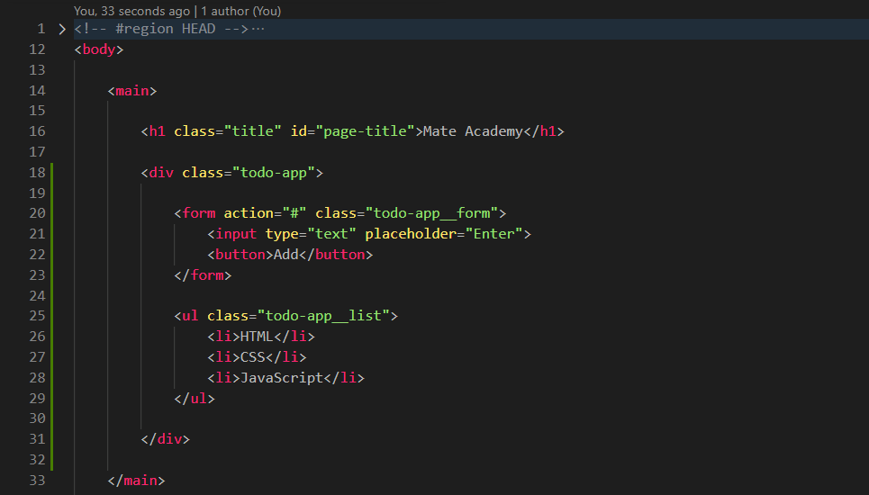
CSS:

Para fazer isso iremos escrever uma pequena lista que pode ser editada.
Iremos comecar criando um elemento com a class todo-app.
Dentro dele um form todo-app__form onde dentro dele teremos um input e button.
Dentro de nosso todo-app criaremos outro elemento um ul todo-app__list com 3 li.
Feito isso apos digitar algo e dar enter, nossos dados escritos simplesmente somem, por padrao o formulario envia dados para o servidor, porem nao especificamos uma acao para o formluario entao os dados sao enviados diretamente para a pagina porem nosso input nao tem nome e nao conseguimos nem ver os dados adicionados ao endereco, para concertar isso iremos ao nosso JS.
Iniciaremos nosso JavaScript (JS) da seguinte forma:
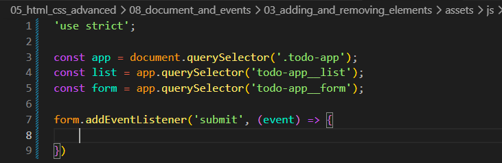
Iniciamos criando **3 variáveis** para armazenar referências aos elementos da página. A primeira é const app = document.querySelector('.todo-app');.
const app = document.querySelector('.todo-app'); **seleciona o elemento** com a classe .todo-app. Assim, podemos **buscar os demais elementos apenas dentro dele**, deixando o código mais organizado.
const list = app.querySelector('.todo-app__list'); e const form = app.querySelector('.todo-app__form');
Ambos utilizam app.querySelector(), pois a busca é feita **dentro do elemento armazenado na variável app**, em vez de pesquisar o documento inteiro.
Para remover a acao padrao temos duas opcoes usar o event object no caso o parametro de nossa funcao ou no evento do formulario.
Para remover a acao padrao temos duas opcoes usar o event object no caso o parametro de nossa funcao ou no evento do formulario.
No formulario podemos adicionar onsubmit="return false".
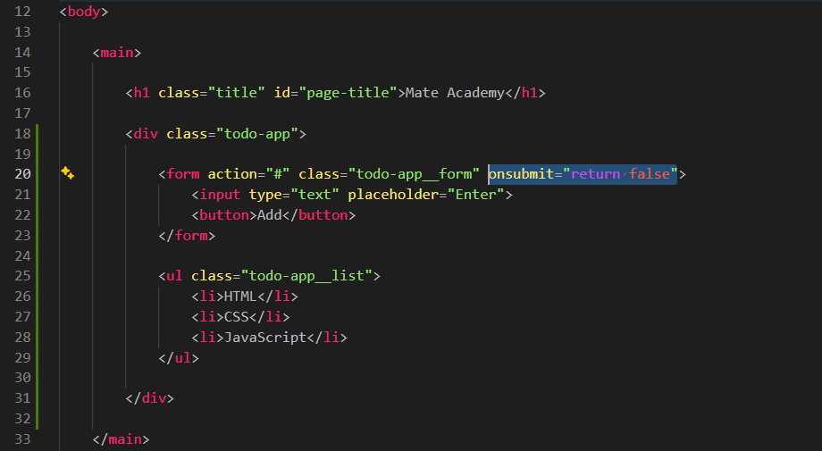
Fazendo isso a pagina nao e recarregada e os dados nao sao enviados para nenhum lugar.
Isso pode ser feito usando o metodo reset do formulario. Iremos fazer isso antes do return false dentro de nosso onsubmit. Ficando da seguinte forma:
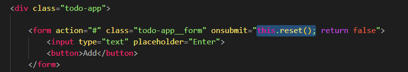
this.reset(); no caso o this e o elemento no qual adicionamos o manipulador entao nesse caso ele é o elemento. Com isso chamamos o metodo reset nele.
Com isso agora nosso formulario sera limpo.
Porem nao é a unica coisa que queremos fazer. Queremos adicionar um novo elemento a lista. Entao iremos voltar para nosso JS.
Dentro de nossa funcao iremos adicionar list.append();, dentro desse parametro temos que passar um elemento recem criado, para isso acima iremos adicionar uma variavel para criar um elemento. Ficando da seguinte forma:
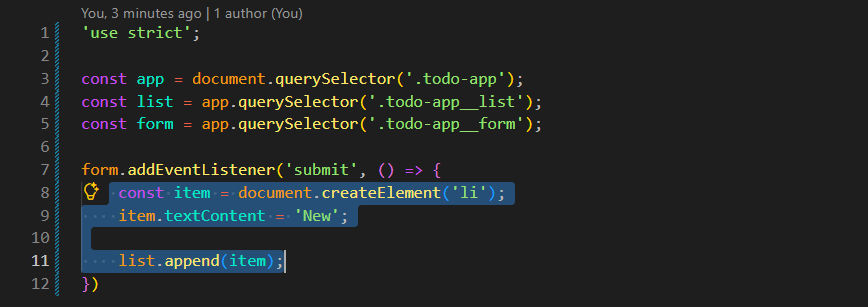
Feito isso agora quando tamos 'enter', nosso texto ira sumir e a pagina nao ira recarregar isso por conta do onsubmit e com o JS adicionamos um novo li com o texto de New.
Porem isso nao e muito conveniente quando temos codigo espalhado em diferentes lugares, entao iremos remover nosso manipulador onsubmit.
Para isso iremos usar o parametro de nossa funcao adicionando (event). Feito isso iremos chama-lo com o metodo event.preventDefault(); com isso nossa pagina nao ira recarregar.
Limpando o texto do input.
Para isso iremos usar nossa variavel form e chamar o metodo reset. Ficando da seguinte forma:
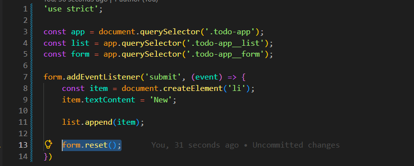
Iremos supor que ao clicarmos duas vezes em um elemento o removemos da lista.
Para fazer isso em itens novos é simples, podemos usar nossa variavel item e adicionar um manipulador de eventos: item.addEventListener('dblclick', () => {}). Ficara da seguinte forma:
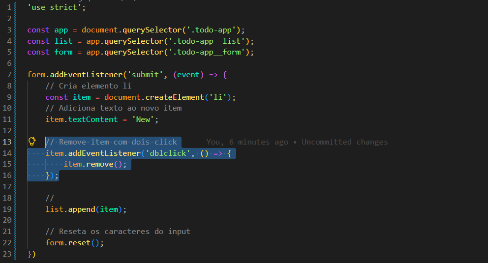
Para podermos adicionar o texto que o usuario escreveu na lista e nao apenas 'New', podemos ir em nosso item.textContent = 'New' e altera-lo da seguinte forma:
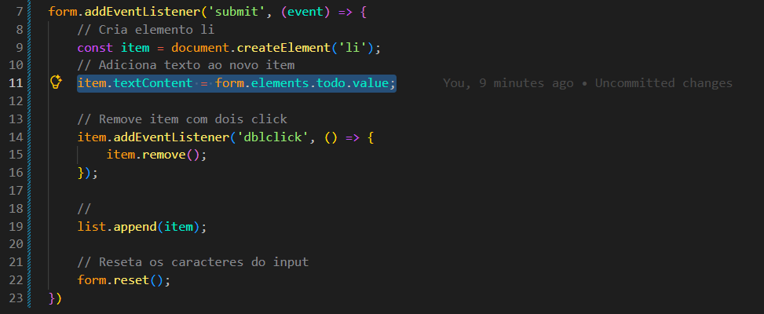
Para isso tambem precisamos voltar em nosso HTML e adicionar um name, para que possa ser localizado, usamos o name="todo".
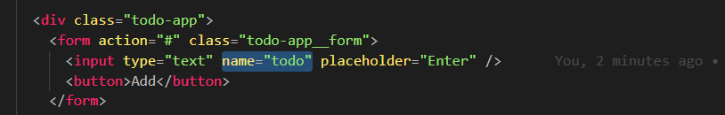
Ate o moneto nosso codigo JS completo ficou da seguinte forma:
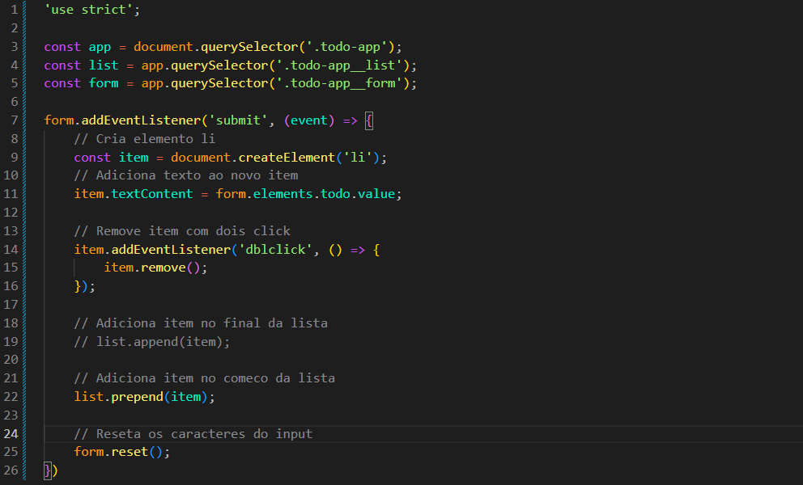
Podemos tambem estar criando um botao para a acao desejada como remover item.
Essa é uma abordagem bem semelheante que faremos em frameworks como React, Angular e etc.
Iremos comecar alterando nosso metodo do list de prepend para insertAdjacentHTML, com isso conseguimos inserir um pedaco de HTML.
Esse metodo possui dois parametros, o primeiro onde iremos inserir (beforeend), segundo parametro passamos a linha de HTML que sera inserida, iremos usar aspas invertidas pois podemos estar usando variaveis.
beforeend: Insere antes da tag de fechamento.
Ficando da seguinte forma:
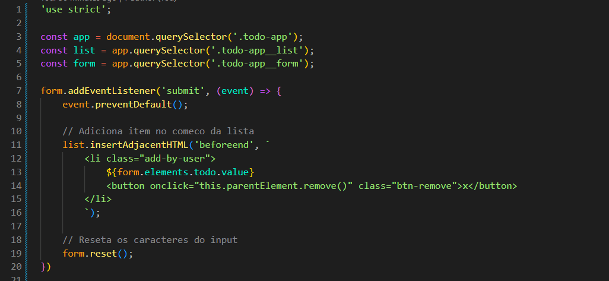